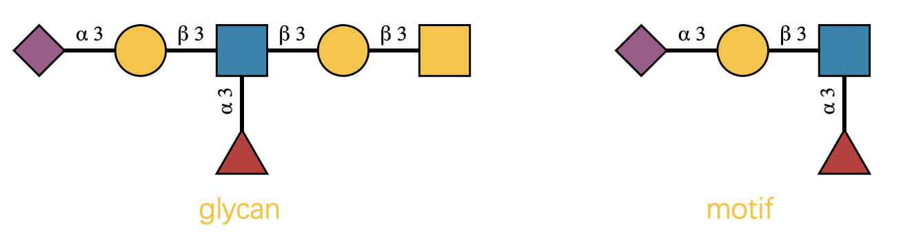
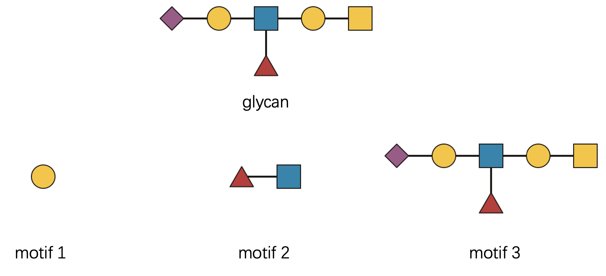
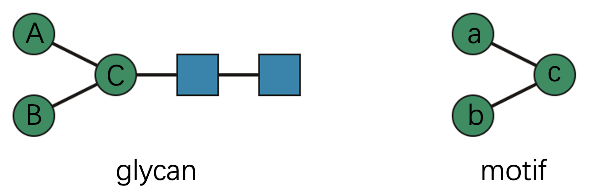
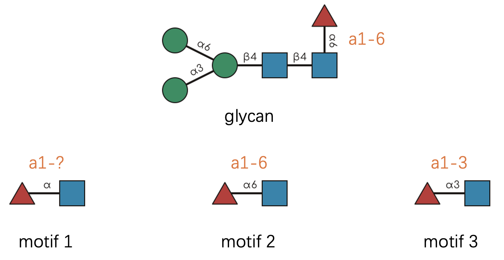
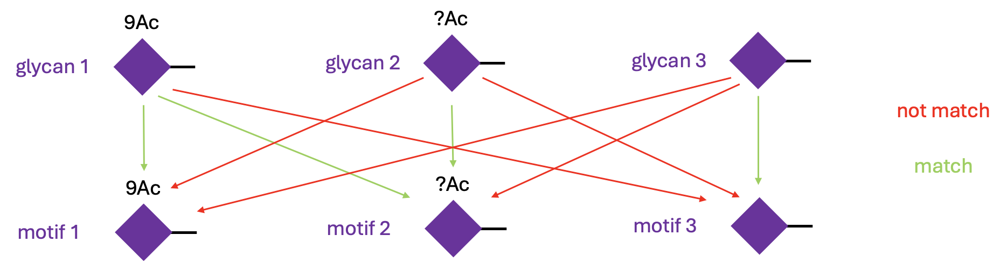
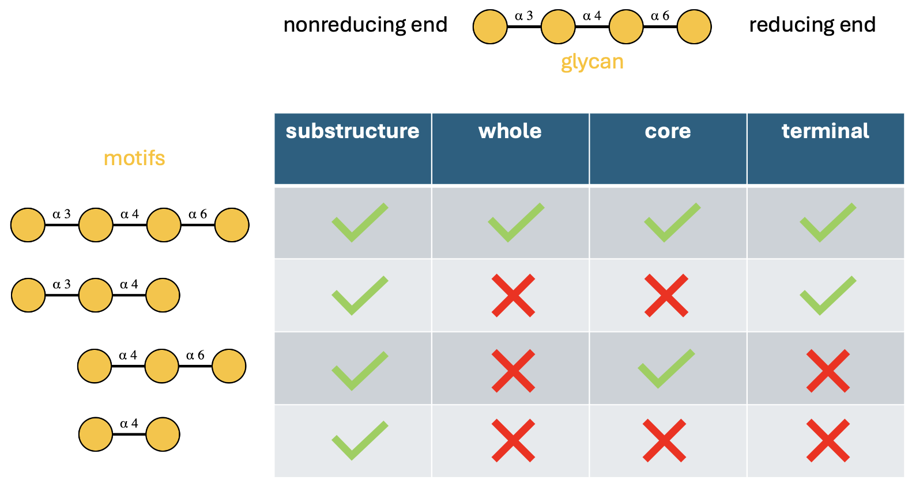

Welcome to the Heart of glymotif 🔬
Ever wondered what’s happening under the hood when you call
have_motif() or count_motif()? You’re about to
embark on a fascinating journey through the intricate world of glycan
pattern recognition! 🚀
In this vignette, we’ll demystify the sophisticated algorithms that
power all glymotif functions. The rules are rooted in the
comprehensive GlycoMotif
database, but we’ve tailored them specifically for practical glycan
analysis workflows.
A quick note: 📝 We use IUPAC-condensed glycan text representations throughout. If this format looks like hieroglyphics to you, take a detour to this excellent primer first. Trust us—it’s worth it!
The Biological Reality: Defining Our Terms 🧬
Before diving into the technical details, let’s establish some clarity about what we’re actually matching.
Throughout this vignette, “glycan” refers to a complete carbohydrate structure—the whole molecular tree, from its reducing end (often attached to proteins or lipids) to its non-reducing termini.
“Motif”, on the other hand, is any structurally meaningful pattern within that tree. It could be:
- A single monosaccharide 🍯
- A small oligosaccharide unit 🔗
- An entire glycan structure 🌳
Our central question is beautifully simple: Does the given glycan contain this particular motif?
Let’s start with a visual example that illustrates this concept:

Looking at this diagram, we can confidently say “the glycan contains
the motif with exactly 1 occurrence.” The presence part is determined by
have_motif(), while the counting aspect is handled by
count_motif().
glycan <- "Neu5Ac(a2-3)Gal(b1-3)[Fuc(a1-6)]GlcNAc(b1-3)Gal(b1-3)GalNAc(b1-"
motif <- "Neu5Ac(a2-3)Gal(b1-3)[Fuc(a1-6)]GlcNAc(b1-"
print(paste0("Does the glycan have the motif? ", have_motif(glycan, motif)))
#> [1] "Does the glycan have the motif? TRUE"
print(paste0("How many occurrences of the motif are there in the glycan? ", count_motif(glycan, motif)))
#> [1] "How many occurrences of the motif are there in the glycan? 1"Why Not Just Use str_detect()? 🤔
You might be thinking: “This example looks straightforward—why not just use string matching?” Great question! 💭 Let’s test that hypothesis:
stringr::str_detect(glycan, stringr::fixed(motif))
#> [1] TRUEIndeed, it works for this simple case. But here’s where the plot thickens… 🎭
Real-world glycan analysis is gloriously complex. Consider these challenging scenarios:
- Complex branching patterns with multiple attachment points 🌿
- Ambiguous linkage annotations where details are missing or uncertain ❓
- Generic monosaccharide assignments from mass spectrometry data 🔍
- Chemical modifications and substituents that add layers of complexity ⚗️
- Positional constraints where context determines biological meaning 📍
- Reducing end anomers that affect molecular recognition 🔄
Writing regular expressions to handle all these nuances? That’s a one-way ticket to debugging hell! 😱 That’s precisely why we need sophisticated computational tools for this task.
Demystifying the Complexity: One Rule at a Time 🧩
The have_motifs() and count_motifs()
functions return matrices with meaningful row and column names. For
clarity in our demonstrations, let’s create simplified wrapper
functions:
# You don't have to understand this.
have_motifs_simple <- function(glycan, motifs, ...) {
unname(have_motifs(glycan, motifs, ...)[1, ])
}
count_motifs_simple <- function(glycan, motifs, ...) {
unname(count_motifs(glycan, motifs, ...)[1, ])
}Now, let’s explore each matching rule systematically.
Rule 1: Branching Logic 🌳
Branching patterns are actually quite intuitive once you think of glycans as tree structures. Let’s examine this with a concrete example:

Let’s check three distinct motifs, each representing a different level of structural complexity:
- “Gal(??-” - a single monosaccharide building block
- “Fuc(??-?)GlcNAc(??-” - a disaccharide with ambiguous linkage
- The complete glycan structure itself
glycan <- "Neu5Ac(??-?)Gal(??-?)[Fuc(??-?)]GlcNAc(??-?)Gal(??-?)GalNAc(b1-"
motifs <- c(
"Gal(??-",
"Fuc(??-?)GlcNAc(??-",
glycan
)
count_motifs_simple(glycan, motifs)
#> [1] 2 1 1The computational perspective: 🖥️ Behind the scenes, we’re performing subgraph isomorphism matching. Glycans and motifs are represented as mathematical graphs, and we’re searching for structural embeddings.
But there are two crucial distinctions from standard graph theory:
First, directionality matters. ⬅️➡️ The reducing end (right side) and non-reducing end (left side) are biologically distinct. Direction affects function:
motifs <- c("Fuc(??-?)GlcNAc(??-", "GlcNAc(??-?)Fuc(??-")
have_motifs_simple(glycan, motifs)
#> [1] TRUE FALSESecond, biological equivalence trumps mathematical multiplicity. 🔄 When multiple mathematically distinct matches have identical biological meaning, we count them as one.
Consider this elegant example:

Technically, this motif has two valid subgraph matches within the
glycan (“A-a, B-b, C-c” and “A-b, B-a, C-c”). But from a biological
perspective, these matches are equivalent—the specific assignment of
mannose residues doesn’t matter. Therefore, count_motif()
reports exactly one match:
glycan <- "Man(??-?)[Man(??-?)]Man(??-?)GlcNAc(??-?)GlcNAc(??-"
motif <- "Man(??-?)[Man(??-?)]Man(??-"
count_motif(glycan, motif)
#> [1] 1Rule 2: Linkage Flexibility 🔗
Linkage information in glycomics can be frustratingly incomplete. You might encounter patterns like “??-6”, “a2-?”, or complete unknowns. Our matching philosophy is elegantly simple:
The glycan cannot be more ambiguous than the motif.
This means a concrete linkage like “a2-6” in your glycan data will match:
- “a2-6” (exact match) ✅
- “a2-?” (position-specific, anomer flexible) ✅
- “??-6” (anomer-specific, position flexible) ✅
- “??-?” (completely flexible wildcard) ✅
But an ambiguous linkage like “a2-?” will only match equally or more flexible patterns in the motif.
Let’s see this in practice:

Pro tip about notation: 💡 Following SNFG conventions, we often abbreviate linkages by omitting the anomeric carbon number. So “a1-6” becomes simply “a6” since the anomeric position is typically known.
glycan <- "Man(a1-3)[Man(a1-6)]Man(b1-4)GlcNAc(b1-4)[Fuc(a1-6)]GlcNAc(b1-"
motifs <- c(
"Fuc(a1-?)GlcNAc(b1-", # Motif 1: anomer known, position flexible
"Fuc(a1-6)GlcNAc(b1-", # Motif 2: exact linkage match
"Fuc(a1-3)GlcNAc(b1-" # Motif 3: wrong position specification
)
have_motifs_simple(glycan, motifs)
#> [1] TRUE TRUE FALSERule 3: Monosaccharide Resolution 🔬
Mass spectrometry often provides incomplete monosaccharide identification. You might know there’s a hexose present but not whether it’s glucose, galactose, or mannose.
We distinguish between two resolution levels:
- Concrete monosaccharides: Structurally specific (e.g., “Gal”, “Man”, “Glc”)
- Generic monosaccharides: Compositionally defined (e.g., “Hex”, “HexNAc”, “dHex”)
The matching rule mirrors our linkage philosophy: The glycan cannot be more ambiguous than the motif.
Specifically:
- Concrete monosaccharides in glycans can match both concrete and generic motifs ✅
- Generic monosaccharides in glycans can only match generic motifs ✅
Rule 4: Chemical Modifications 🧪
Real glycans are often decorated with chemical modifications—acetylation, sulfation, methylation, and more. These substituents have two components: position (where they’re attached) and identity (what they are).
For example, “Neu5Ac9Ac” represents N-acetylneuraminic acid with an additional 9-O-acetyl group.
The matching rules are straightforward but powerful:
- Identity matching: If the glycan has a substituent, the motif must have the same type to match
- Position flexibility: The glycan cannot be more ambiguous than the motif regarding position

Let’s see this in action:
glycans <- c("Neu5Ac9Ac(a2-", "Neu5Ac?Ac(a2-", "Neu5Ac(a2-")
motifs <- c("Neu5Ac9Ac(a2-", "Neu5Ac?Ac(a2-", "Neu5Ac(a2-")
mat <- have_motifs(glycans, motifs)
rownames(mat) <- paste0("glycan_", 1:3)
colnames(mat) <- paste0("motif_", 1:3)
mat
#> motif_1 motif_2 motif_3
#> glycan_1 TRUE TRUE FALSE
#> glycan_2 FALSE TRUE FALSE
#> glycan_3 FALSE FALSE TRUEThe default behavior is to match the substituent strictly. This is
reasonable in most cases, because monosaccharides with different
substituents should be regarded as different. However, you can change
this behavior by setting strict_sub = FALSE. In this case,
the substituent is optional in the motif, so the glycan “Neu5Ac9Ac” can
match the motif “Neu5Ac”.
have_motif("Neu5Ac9Ac(a2-", "Neu5Ac(a2-", strict_sub = FALSE)
#> [1] TRUERule 5: Alignment Constraints 📍
Here’s where biology meets computation in fascinating ways! 🎯 Some motifs are only meaningful in specific structural contexts.
Consider the N-glycan core—it’s biologically significant only when positioned at the reducing end. Similarly, the Tn antigen (simply GalNAc) should represent the entire O-glycan structure, not just any GalNAc residue buried within a larger molecule.
Following GlycoMotif standards, we recognize four alignment types:
- “substructure”: The motif can appear anywhere within the glycan 🔍
-
“core”: Must align with a connected subtree at the
reducing end 🌱
- “terminal”: Must align with a connected subtree at non-reducing ends 🍃
- “whole”: Must match the entire glycan structure 🌳

Let’s verify these behaviors computationally:
glycan <- "Gal(a1-3)Gal(a1-4)Gal(a1-6)Gal(a1-"
motifs <- c(
"Gal(a1-3)Gal(a1-4)Gal(a1-6)Gal(a1-", # motif 1: complete structure
"Gal(a1-3)Gal(a1-4)Gal(a1-", # motif 2: terminal branch
"Gal(a1-4)Gal(a1-6)Gal(a1-", # motif 3: reducing-end subtree
"Gal(a1-4)Gal(a1-" # motif 4: internal fragment
)
alignments <- c("substructure", "whole", "core", "terminal")
mat <- do.call(cbind, purrr::map(alignments, ~ have_motifs_simple(glycan, motifs, alignment = .x)))
colnames(mat) <- alignments
rownames(mat) <- paste0("motif_", 1:4)
mat
#> substructure whole core terminal
#> motif_1 TRUE TRUE TRUE TRUE
#> motif_2 TRUE FALSE FALSE TRUE
#> motif_3 TRUE FALSE TRUE FALSE
#> motif_4 TRUE FALSE FALSE FALSERule 6: Reducing End Anomers 🔄
The reducing end of a glycan—that special monosaccharide connected to proteins or lipids—deserves special attention. Its anomeric configuration can significantly impact biological function.
The matching behavior depends on motif alignment:
When the motif aligns away from the reducing end: The motif’s “reducing end” (really just its rightmost residue) is matched against the corresponding internal linkage.
glycan <- "Gal(a1-3)GalNAc(b1-"
motifs <- c("Gal(a1-", "Gal(b1-")
have_motifs_simple(glycan, motifs)
#> [1] TRUE FALSEWhen the motif aligns at the reducing end: Direct comparison with the glycan’s actual reducing end anomer.
glycan <- "Gal(a1-3)GalNAc(b1-"
motifs <- c("GalNAc(a1-", "GalNAc(b1-")
have_motifs_simple(glycan, motifs)
#> [1] FALSE TRUEThe Big Picture: Why This Complexity Matters 🌟
You might be wondering: “Why all these intricate rules?” The answer lies in the beautiful complexity of biological systems. 🧬
Unlike artificial pattern matching, biological recognition systems are:
- Context-sensitive: The same motif can have different meanings in different locations
-
Fault-tolerant: Partial information should still
yield meaningful results
- Hierarchically organized: Generic patterns can be refined into specific ones
- Chemically aware: Modifications and substitutions are integral to function
By encoding these biological principles into our matching algorithms,
glymotif bridges the gap between computational analysis and
biological reality.
Whether you’re analyzing clinical glycomics data, exploring evolutionary relationships, or designing glycan-based therapeutics, these sophisticated matching rules ensure your results are both computationally sound and biologically meaningful.
Ready for More? 🚀
This deep dive into motif matching rules provides the foundation for
understanding how glymotif works. Armed with this
knowledge, you’re ready to tackle even the most complex glycan analysis
challenges!
For practical applications and real-world examples, head back to the Getting Started guide. For detailed function documentation, explore the reference manual.
Happy glycan hunting! 🔍✨